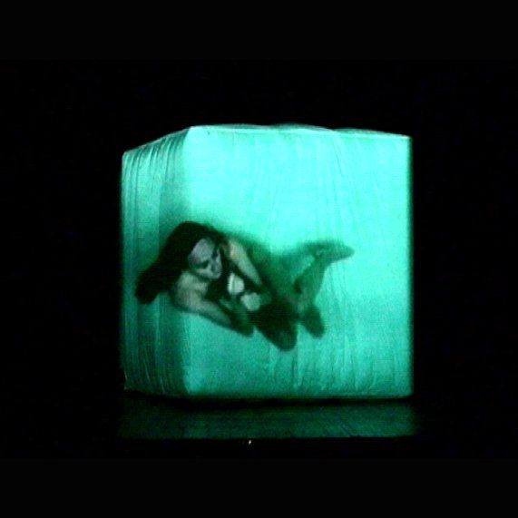
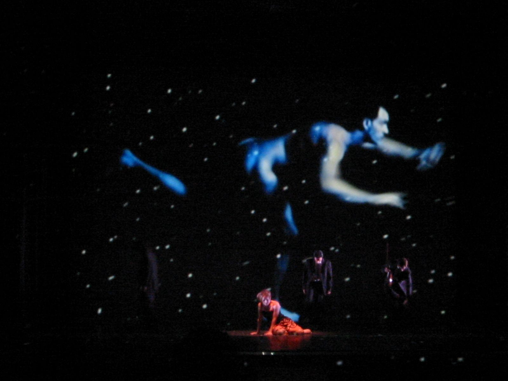
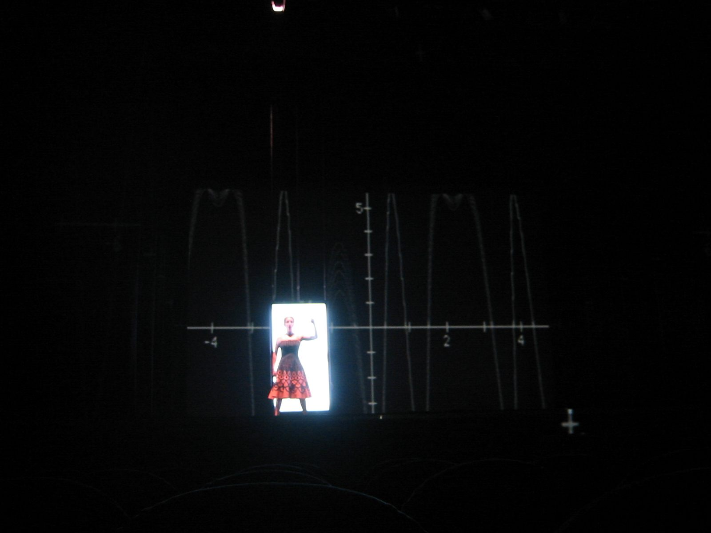
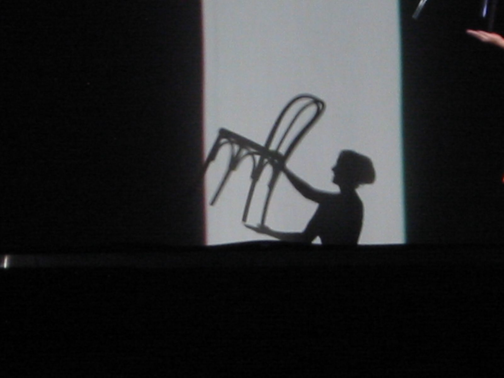
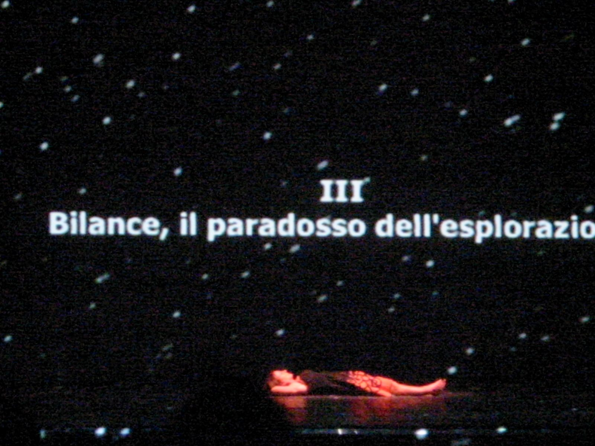
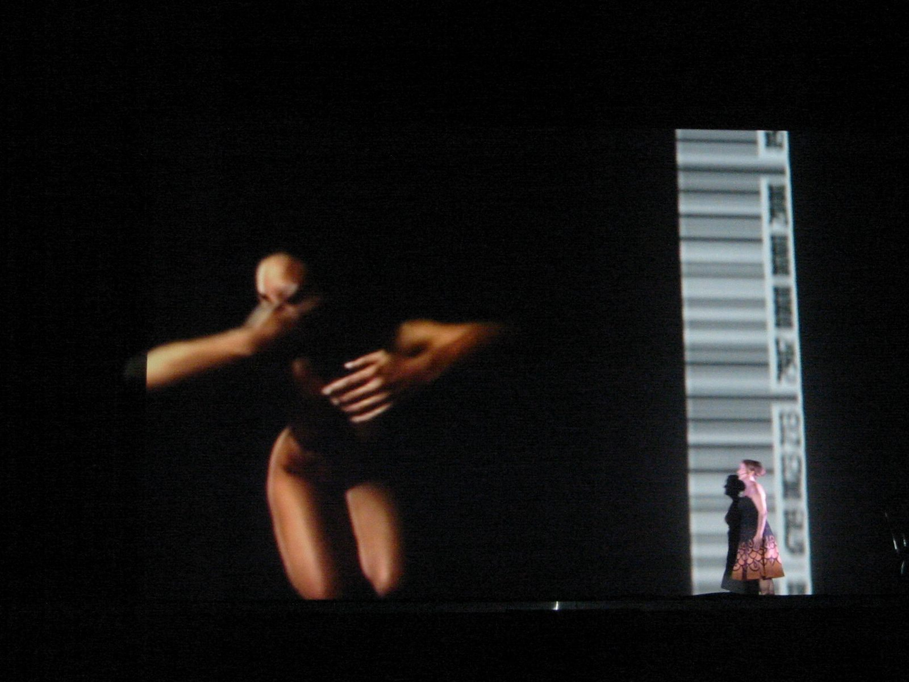
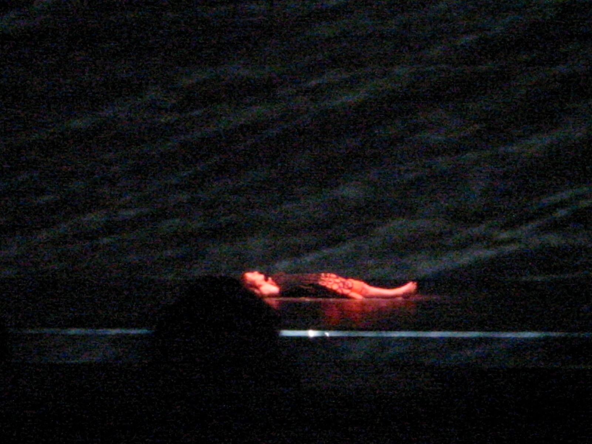

Theatre · Multimedia Performance · 2004
Variazioni sul Cielo
Inspired by Margherita Hack · Mittelfest / Teatro Rossetti
Mittelfest 2004. Margherita Hack scrive un libro di astrofisica per chi non sa di astrofisica; Cristian Taraborrelli e Fabio Massimo Iaquone lo trasformano in cubo luminoso. La scena diventa osservatorio e grembo. La scienza, finalmente, smette di spiegare e inizia a respirare.
Mittelfest 2004. Margherita Hack writes a book of astrophysics for those who do not know astrophysics; Cristian Taraborrelli and Fabio Massimo Iaquone turn it into a luminous cube. The stage becomes observatory and womb. Science, at last, stops explaining and begins to breathe.
Mittelfest 2004. Margherita Hack écrit un livre d'astrophysique pour ceux qui n'en savent pas ; Cristian Taraborrelli et Fabio Massimo Iaquone le transforment en cube lumineux. La scène devient observatoire et ventre.
A performance for lights, sounds and dreams. Variazioni sul Cielo is a multimedia theatre piece freely inspired by the book Sette variazioni sul cielo by the great Italian astrophysicist Margherita Hack — a journey through spectroscopic and dreamlike images where science and dreams, brought together, create a universe in which it is still possible to live.
Cristian Taraborrelli designed the virtual space — a luminous translucent cube that becomes planet, womb, and observatory — the scenic device through which body, light, and projection merge into a single cosmic organism. Alongside Fabio Massimo Iaquone's video creations and Sandra Cavallini's performance, the space becomes a living constellation: the performer inhabits the projections, the projections inhabit the performer.
Uno spettacolo per luci, suoni e sogni. Variazioni sul Cielo è un'opera teatrale multimediale liberamente ispirata al libro Sette variazioni sul cielo della grande astrofisica italiana Margherita Hack — un viaggio attraverso immagini spettroscopiche e oniriche dove scienza e sogno, riuniti, creano un universo in cui è ancora possibile vivere.
Cristian Taraborrelli ha progettato lo spazio virtuale — un cubo luminoso traslucido che diventa pianeta, grembo e osservatorio — il dispositivo scenico attraverso cui corpo, luce e proiezione si fondono in un unico organismo cosmico. Insieme alle creazioni video di Fabio Massimo Iaquone e alla performance di Sandra Cavallini, lo spazio diventa una costellazione vivente: la performer abita le proiezioni, le proiezioni abitano la performer.
Un spectacle de lumières, de sons et de rêves. Variazioni sul Cielo est une pièce de théâtre multimédia librement inspirée du livre Sette variazioni sul cielo de la grande astrophysicienne italienne Margherita Hack — un voyage à travers des images spectroscopiques et oniriques où science et rêve, réunis, créent un univers dans lequel il est encore possible de vivre.
Cristian Taraborrelli a conçu l'espace virtuel — un cube lumineux translucide qui devient planète, ventre et observatoire — le dispositif scénique à travers lequel corps, lumière et projection fusionnent en un seul organisme cosmique. Avec les créations vidéo de Fabio Massimo Iaquone et la performance de Sandra Cavallini, l'espace devient une constellation vivante.







The first Italian woman to direct an astronomical observatory (Trieste), Margherita Hack was one of the most influential astrophysicists of the twentieth century and an extraordinary science communicator. Her book Sette variazioni sul cielo — seven meditations on the cosmos, from the ancient Babylonians to modern spectroscopy — became the poetic and scientific backbone of this performance.
Hack participated directly in the project, lending her voice and image to the video sequences that punctuate the seven chapters. Her presence on the screen — lucid, ironic, passionate — transforms the performance into a genuine encounter between art and science, between the rigour of research and the freedom of dreams.
This performance is dedicated to her memory and to all those who look up at the sky with wonder.
Prima donna italiana a dirigere un osservatorio astronomico (Trieste), Margherita Hack è stata una delle astrofisiche più influenti del Novecento e una straordinaria divulgatrice scientifica. Il suo libro Sette variazioni sul cielo — sette meditazioni sul cosmo, dagli antichi babilonesi alla spettroscopia moderna — è diventato la colonna vertebrale poetica e scientifica di questo spettacolo.
Hack ha partecipato direttamente al progetto, prestando la sua voce e la sua immagine alle sequenze video che scandiscono i sette capitoli. La sua presenza sullo schermo — lucida, ironica, appassionata — trasforma lo spettacolo in un vero incontro tra arte e scienza, tra il rigore della ricerca e la libertà del sogno.
Questo spettacolo è dedicato alla sua memoria e a tutti coloro che guardano il cielo con meraviglia.
Première femme italienne à diriger un observatoire astronomique (Trieste), Margherita Hack fut l'une des astrophysiciennes les plus influentes du XXe siècle et une extraordinaire communicatrice scientifique. Son livre Sette variazioni sul cielo — sept méditations sur le cosmos, des anciens Babyloniens à la spectroscopie moderne — est devenu la colonne vertébrale poétique et scientifique de ce spectacle.
Hack a participé directement au projet, prêtant sa voix et son image aux séquences vidéo qui ponctuent les sept chapitres. Sa présence à l'écran — lucide, ironique, passionnée — transforme le spectacle en une véritable rencontre entre art et science, entre la rigueur de la recherche et la liberté du rêve.
Ce spectacle est dédié à sa mémoire et à tous ceux qui regardent le ciel avec émerveillement.
The scenic concept revolves around a single, luminous element: a translucent cube that floats on the stage like a celestial body. Designed by Cristian Taraborrelli, this virtual space is simultaneously screen, container, and character — a three-dimensional projection surface onto which Iaquone's video creations paint constellations, spectrograms, and human bodies in weightless flight.
The performer, Sandra Cavallini, moves in dialogue with this architecture of light. She enters the cube, is engulfed by projections, becomes part of the cosmos. The seven chapters — from prologue to epilogue — unfold as a celestial cartography: each variation is a new sky, a new frequency, a new way of seeing the universe through Margherita Hack's luminous gaze.
Il concept scenico ruota attorno a un unico elemento luminoso: un cubo traslucido che fluttua sul palcoscenico come un corpo celeste. Progettato da Cristian Taraborrelli, questo spazio virtuale è contemporaneamente schermo, contenitore e personaggio — una superficie di proiezione tridimensionale su cui le creazioni video di Iaquone dipingono costellazioni, spettrogrammi e corpi umani in volo senza peso.
La performer, Sandra Cavallini, si muove in dialogo con questa architettura di luce. Entra nel cubo, viene inghiottita dalle proiezioni, diventa parte del cosmo. I sette capitoli — dal prologo all'epilogo — si dispiegano come una cartografia celeste: ogni variazione è un nuovo cielo, una nuova frequenza, un nuovo modo di vedere l'universo attraverso lo sguardo luminoso di Margherita Hack.
Le concept scénique s'articule autour d'un seul élément lumineux : un cube translucide qui flotte sur la scène comme un corps céleste. Conçu par Cristian Taraborrelli, cet espace virtuel est à la fois écran, contenant et personnage — une surface de projection tridimensionnelle sur laquelle les créations vidéo d'Iaquone peignent constellations, spectrogrammes et corps humains en vol apesanteur.
La performeuse, Sandra Cavallini, se déplace en dialogue avec cette architecture de lumière. Elle entre dans le cube, est engloutie par les projections, devient partie du cosmos. Les sept chapitres — du prologue à l'épilogue — se déploient comme une cartographie céleste : chaque variation est un nouveau ciel, une nouvelle fréquence, une nouvelle façon de voir l'univers à travers le regard lumineux de Margherita Hack.
Regia & Video Direction & Video Mise en scène & Vidéo
Fabio Massimo Iaquone
Regista, video artist e direttore della fotografia, fra i più importanti video designer italiani di teatro lirico e di prosa. Storico collaboratore di Giorgio Barberio Corsetti, ha firmato la videoscenografia di praticamente tutte le grandi produzioni operistiche dello studio Taraborrelli (Medea Fenice 2002, Don Carlos Mariinsky 2012, Macbeth Scala 2013, Pagliacci AR Genova 2021, La Jura Cagliari 2015, Il colore del sole Jesi 2017, Planetaria 2024). Per Variazioni sul Cielo, eccezionalmente, è lui a firmare la regia — ed è Cristian Taraborrelli a fare lo scenografo che lo accompagna. Il rovesciamento dei ruoli è il segno di un sodalizio fra pari, che attraverserà un quarto di secolo. Director, video artist and director of photography, among the most important Italian video designers of lyric and spoken theatre. Long-time collaborator of Giorgio Barberio Corsetti, he has signed the video-scenography of virtually every major opera production of the Taraborrelli studio (Medea at La Fenice 2002, Don Carlos at the Mariinsky 2012, Macbeth at La Scala 2013, Pagliacci AR Genoa 2021, La Jura Cagliari 2015, Il colore del sole Jesi 2017, Planetaria 2024). For Variazioni sul Cielo, exceptionally, he signs the direction — and Cristian Taraborrelli is the set designer who accompanies him. The role-reversal is the mark of a partnership between peers, that will run across a quarter century. Metteur en scène, vidéaste et directeur de la photographie, parmi les plus importants vidéo designers italiens du théâtre lyrique et parlé. Collaborateur historique de Giorgio Barberio Corsetti, il a signé la vidéoscénographie de pratiquement toutes les grandes productions opératiques du studio Taraborrelli (Medea Fenice 2002, Don Carlos Mariinsky 2012, Macbeth Scala 2013, Pagliacci AR Gênes 2021, La Jura Cagliari 2015, Il colore del sole Jesi 2017, Planetaria 2024). Pour Variazioni sul Cielo, exceptionnellement, c'est lui qui signe la mise en scène — et Cristian Taraborrelli est le scénographe qui l'accompagne. Le renversement des rôles est le signe d'une collaboration entre pairs, qui traversera un quart de siècle.
Performer & Co-autrice dei testi Performer & Co-author of texts Interprète & Co-autrice des textes
Sandra Cavallini
Attrice e autrice, formatasi tra il teatro di ricerca italiano e i festival mitteleuropei. Per Variazioni sul Cielo co-firma con Margherita Hack la riscrittura drammaturgica del libro Sette variazioni sul cielo e ne è in scena la voce e il corpo: per oltre un'ora attraversa il cubo traslucido come una navigatrice del cosmo, dialogando in tempo reale con la voce registrata della scienziata e con le proiezioni di Iaquone. La sua presenza scenica — sobria, asciutta, mai didascalica — trasforma il teatro-scienza in poesia. Actress and writer, trained between Italian research theatre and Mittel-European festivals. For Variazioni sul Cielo she co-signs with Margherita Hack the dramaturgical rewriting of the book Sette variazioni sul cielo and is on stage as voice and body: for over an hour she crosses the translucent cube as a cosmic navigator, dialoguing in real time with the scientist's recorded voice and with Iaquone's projections. Her stage presence — sober, dry, never didactic — turns theatre-science into poetry. Actrice et autrice, formée entre le théâtre de recherche italien et les festivals mitteleuropéens. Pour Variazioni sul Cielo elle cosigne avec Margherita Hack la réécriture dramaturgique du livre Sette variazioni sul cielo et est en scène comme voix et corps : pendant plus d'une heure elle traverse le cube translucide comme une navigatrice du cosmos, dialoguant en temps réel avec la voix enregistrée de la scientifique et avec les projections d'Iaquone. Sa présence scénique — sobre, sèche, jamais didactique — transforme le théâtre-science en poésie.
Musica Music Musique
Valentino Corvino
Compositore, violinista e direttore d'orchestra italiano, attivo fra musica contemporanea, sound design teatrale e cinematografico. Per Variazioni sul Cielo compone una partitura elettro-acustica che accompagna le sette variazioni con un tessuto sonoro morbido, fatto di drone, archi processati, glissandi cosmici. La sua scrittura non illustra l'astrofisica: la rende abitabile, restituendola al respiro del corpo umano. Italian composer, violinist and conductor, active between contemporary music, theatre and film sound design. For Variazioni sul Cielo he composes an electro-acoustic score that accompanies the seven variations with a soft sound texture made of drone, processed strings, cosmic glissandi. His writing does not illustrate astrophysics: it makes it inhabitable, returning it to the breath of the human body. Compositeur, violoniste et chef d'orchestre italien, actif entre musique contemporaine, sound design théâtral et cinématographique. Pour Variazioni sul Cielo il compose une partition électro-acoustique qui accompagne les sept variations d'un tissu sonore moelleux, fait de drone, de cordes traitées, de glissandos cosmiques. Son écriture n'illustre pas l'astrophysique : elle la rend habitable, la rendant au souffle du corps humain.
Produzione Production Production
Teatro Stabile del Friuli-Venezia Giulia · Promo Music Bologna
La produzione abbraccia due realtà complementari: lo Stabile del Friuli-Venezia Giulia — teatro pubblico di tradizione mitteleuropea, attivo dal 1953, con sede nello storico Teatro Rossetti di Trieste — che porta lo spettacolo dentro il circuito teatrale istituzionale; e Promo Music Bologna, etichetta indipendente specializzata in produzioni di teatro-musica e teatro-scienza, che garantisce la circolazione festivaliera (Mittelfest, GiovedìScienza). Il modello produttivo combinato è il segreto della longevità in tournée dello spettacolo. The production embraces two complementary realities: the Stabile del Friuli-Venezia Giulia — public theatre of Mittel-European tradition, active since 1953, based at Trieste's historic Teatro Rossetti — which brings the show into the institutional theatre circuit; and Promo Music Bologna, an independent label specialised in theatre-music and theatre-science productions, ensuring festival circulation (Mittelfest, GiovedìScienza). The combined production model is the secret of the show's tour longevity. La production embrasse deux réalités complémentaires : le Stabile du Frioul-Vénétie julienne — théâtre public de tradition mitteleuropéenne, actif depuis 1953, installé au Teatro Rossetti historique de Trieste — qui porte le spectacle dans le circuit institutionnel ; et Promo Music Bologna, label indépendant spécialisé dans les productions de théâtre-musique et théâtre-science, garantissant la circulation festivalière (Mittelfest, GiovedìScienza). Le modèle de production combiné est le secret de la longévité de la tournée du spectacle.
Lettura critica — Il cubo traslucido
Mittelfest 2004. Cividale del Friuli, terra di confine fra Italia, Slovenia e Austria, sede dal 1991 del festival mitteleuropeo di teatro, musica, danza e poesia. È qui che debutta Variazioni sul Cielo, una delle prime grandi commesse pubbliche di Cristian Taraborrelli — affidata da un teatro stabile di tradizione novecentesca per inscenare il libro di una scienziata che, in quel momento, è già figura iconica della divulgazione italiana. Il libro — Sette variazioni sul cielo, Cortina 1999, riedizione Sperling & Kupfer 2002 — affianca alle pagine di Margherita Hack le illustrazioni dell'astrofisica Viviana Lupi: si presenta già come testo a doppio registro, scientifico e poetico, dove l'attenzione è alla traduzione del cosmo in immagine.
L'invenzione scenografica di Taraborrelli risponde a questo doppio registro con un'idea sola, radicale, che attraverserà tutto il suo lavoro successivo: il cubo traslucido. Tessuto semi-trasparente teso su una struttura modulare, lo spazio diventa contemporaneamente schermo, contenitore e personaggio. La performer Sandra Cavallini lo abita; Iaquone proietta sopra e dentro il cubo costellazioni, spettrogrammi e corpi in volo apesanteur. Il risultato è un effetto olografico tridimensionale anni prima che il termine volumetric video entri nel vocabolario tecnico dell'industria. Nel 2024, vent'anni dopo, lo stesso principio governerà Planetaria al Salone Margherita: il dispositivo a tulle traslucido, il corpo dell'attore dentro la proiezione, la scena come membrana fra mondo fisico e mondo digitale.
Il rovesciamento di ruoli è un altro tratto strutturale del progetto. Iaquone — che firmerà le video-scenografie di tutti i grandi titoli successivi (Don Carlos Mariinsky 2012, Macbeth Scala 2013, Pagliacci AR Genova 2021, Planetaria 2024) — qui è regista, e Taraborrelli lo affianca come scenografo. Il sodalizio fra pari nasce esattamente al punto in cui i ruoli si scambiano: chi normalmente firma le scene firma le immagini, chi firma le immagini firma la regia. La presenza viva di Margherita Hack stessa — voce e immagine nelle sequenze video — chiude il cerchio: la scienza non viene illustrata, viene messa in scena. Il teatro-scienza italiano del Duemila trova qui uno dei suoi vertici tecnici e poetici.
Il modello produttivo è un altro insegnamento di lunga durata. Lo Stabile del Friuli-Venezia Giulia (sede storica al Teatro Rossetti di Trieste, attivo dal 1953 nella tradizione mitteleuropea) garantisce il circuito teatrale istituzionale; Promo Music Bologna, etichetta indipendente specializzata in teatro-musica, garantisce la circolazione festivaliera (Mittelfest, GiovedìScienza Torino). La doppia produzione — pubblica e indipendente — è il segreto della longevità in tournée: lo spettacolo continuerà a circolare per anni dopo la prima, nel circuito della divulgazione scientifica italiana, dei festival di confine, dei teatri della contemporaneità lirica.
Mittelfest 2004. Cividale del Friuli, a borderland between Italy, Slovenia and Austria, since 1991 the seat of the Mittel-European festival of theatre, music, dance and poetry. It is here that Variazioni sul Cielo premieres, one of Cristian Taraborrelli's first major public commissions — entrusted by a twentieth-century institutional theatre to stage the book of a scientist who, at that moment, is already an iconic figure of Italian science communication. The book — Sette variazioni sul cielo, Cortina 1999, Sperling & Kupfer 2002 — pairs Margherita Hack's pages with the illustrations of astrophysicist Viviana Lupi: it presents itself from the start as a double-register text, scientific and poetic, focused on the translation of the cosmos into image.
Taraborrelli's scenographic invention responds to this double register with one single radical idea, which will run through all his later work: the translucent cube. Semi-transparent fabric stretched over a modular frame, the space becomes simultaneously screen, container, and character. Performer Sandra Cavallini inhabits it; Iaquone projects onto and into the cube constellations, spectrograms and weightless bodies. The result is a three-dimensional holographic effect years before the term volumetric video enters the industry vocabulary. In 2024, twenty years later, the same principle will govern Planetaria at Salone Margherita: the translucent tulle device, the actor's body inside the projection, the stage as membrane between physical and digital world.
The role-reversal is another structural trait of the project. Iaquone — who will sign the video-scenographies of all subsequent major titles (Don Carlos Mariinsky 2012, Macbeth Scala 2013, Pagliacci AR Genoa 2021, Planetaria 2024) — is here director, and Taraborrelli accompanies him as set designer. The partnership between peers is born exactly at the point where the roles switch. The live presence of Margherita Hack herself — voice and image in the video sequences — closes the circle: science is not illustrated, it is staged.
The production model is another long-term lesson. The Stabile del Friuli-Venezia Giulia (historic seat at Trieste's Teatro Rossetti, active since 1953 in the Mittel-European tradition) guarantees the institutional theatre circuit; Promo Music Bologna, an independent label specialised in theatre-music, guarantees festival circulation (Mittelfest, GiovedìScienza Turin). The double production — public and independent — is the secret of the show's tour longevity.
Mittelfest 2004. Cividale del Friuli, terre frontière entre Italie, Slovénie et Autriche, siège depuis 1991 du festival mitteleuropéen de théâtre, musique, danse et poésie. C'est ici que Variazioni sul Cielo est créé, l'une des premières grandes commandes publiques de Cristian Taraborrelli. Le livre — Sette variazioni sul cielo, Cortina 1999, Sperling & Kupfer 2002 — double les pages de Margherita Hack avec les illustrations de l'astrophysicienne Viviana Lupi.
L'invention scénographique de Taraborrelli répond à ce double registre par une idée unique et radicale : le cube translucide. Tissu semi-transparent tendu sur une structure modulaire, l'espace devient simultanément écran, contenant et personnage. Vingt ans plus tard, en 2024, le même principe gouvernera Planetaria au Salone Margherita.
Le modèle de production combiné — Stabile public et label indépendant Promo Music Bologna — est le secret de la longévité de la tournée du spectacle.
Apparato critico
«Il cielo è un libro aperto. Basta saperlo leggere.»
L'incipit programmatico di Margherita Hack in Sette variazioni sul cielo (Cortina, 1999). La metafora del libro celeste — eredità di Galileo: «la natura è scritta in lingua matematica» — viene tradotta scenograficamente da Taraborrelli nel cubo traslucido: una pagina tridimensionale dove le costellazioni si proiettano e il corpo della performer le attraversa.
«The sky is an open book. One only needs to know how to read it.»
The programmatic incipit of Margherita Hack in Sette variazioni sul cielo (Cortina, 1999). The metaphor of the celestial book — Galileo's heritage — is scenographically translated by Taraborrelli into the translucent cube: a three-dimensional page where constellations are projected and the performer's body crosses them.
«Le ciel est un livre ouvert. Il suffit de savoir le lire.»
L'incipit programmatique de Margherita Hack dans Sette variazioni sul cielo (Cortina, 1999).
Margherita Hack — Sette variazioni sul cielo, Cortina, 1999 (riedizione Sperling & Kupfer 2002)
«La filosofia è scritta in questo grandissimo libro che continuamente ci sta aperto innanzi a gli occhi (io dico l'universo), ma non si può intendere se prima non s'impara a intender la lingua, e conoscer i caratteri, ne' quali è scritto.»
La massima galileiana del 1623 — la fonte autentica della metafora del cielo come libro — che il libro di Hack rilancia in chiave novecentesca. Il cubo traslucido di Taraborrelli è il volgarizzamento scenografico di questa formula: il libro celeste reso visibile, attraversabile, abitabile.
«Philosophy is written in this grand book the universe, which stands continually open to our gaze, but it cannot be read until we have learnt the language and grown familiar with the characters in which it is written.»
Galileo's 1623 maxim — the authentic source of the celestial-book metaphor that Hack relaunches in twentieth-century key. Taraborrelli's translucent cube is the scenographic vernacular of this formula.
«La philosophie est écrite dans cet immense livre qui se tient toujours ouvert devant nos yeux (je veux dire l'univers).»
La maxime galéilenne de 1623 — la source authentique de la métaphore du livre céleste.
Galileo Galilei — Il Saggiatore, Roma 1623, capitolo VI
«Mittelfest 2004 si conferma come il festival che meglio sa intercettare l'incontro tra le arti scientifiche e quelle dello spettacolo. Variazioni sul Cielo — con l'astrofisica Margherita Hack in scena video, la performer Sandra Cavallini, la regia di Fabio Massimo Iaquone e la scenografia luminosa di Cristian Taraborrelli — ne è quest'anno la prova più alta.»
«Mittelfest 2004 confirms itself as the festival that best intercepts the encounter between scientific arts and the performing arts. Variazioni sul Cielo is this year's highest proof of it.»
«Mittelfest 2004 confirme être le festival qui sait le mieux intercepter la rencontre entre arts scientifiques et arts du spectacle.»
Critica festivaliera — Mittelfest, Cividale del Friuli, luglio 2004
«Il cubo traslucido di Taraborrelli del 2004 è il prototipo di tutto il lavoro successivo dello studio sullo spazio scenico come membrana. Ciò che a Cividale è un dispositivo di teatro-scienza diventerà, vent'anni dopo, il principio governante di Planetaria al Salone Margherita: il corpo dell'attore dentro la proiezione, la scena come superficie di transito fra mondo fisico e mondo digitale. La storia di Cristian Taraborrelli con il volumetric stage comincia qui.»
«Taraborrelli's 2004 translucent cube is the prototype of all the studio's subsequent work on stage space as membrane. What at Cividale is a theatre-science device will become, twenty years later, the governing principle of Planetaria at Salone Margherita.»
«Le cube translucide de Taraborrelli de 2004 est le prototype de tout le travail ultérieur du studio sur l'espace scénique comme membrane.»
Critica scenografica — lettura retrospettiva del cubo traslucido di Variazioni sul Cielo